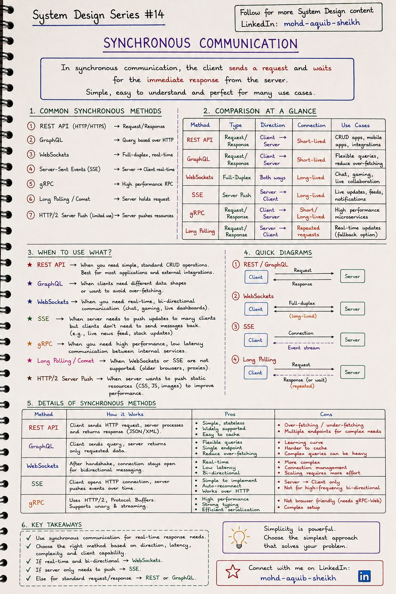
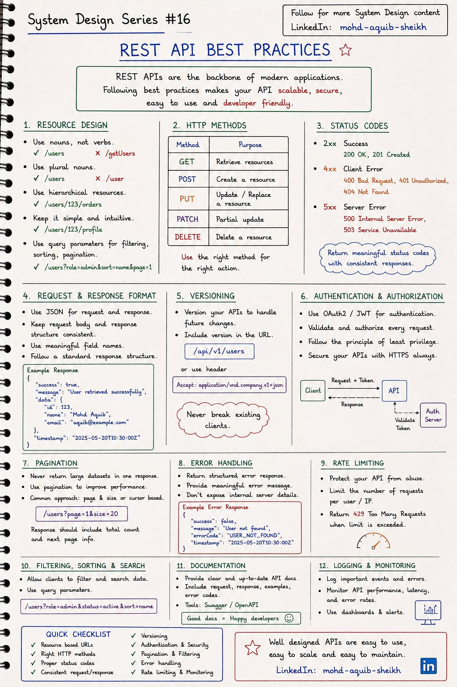
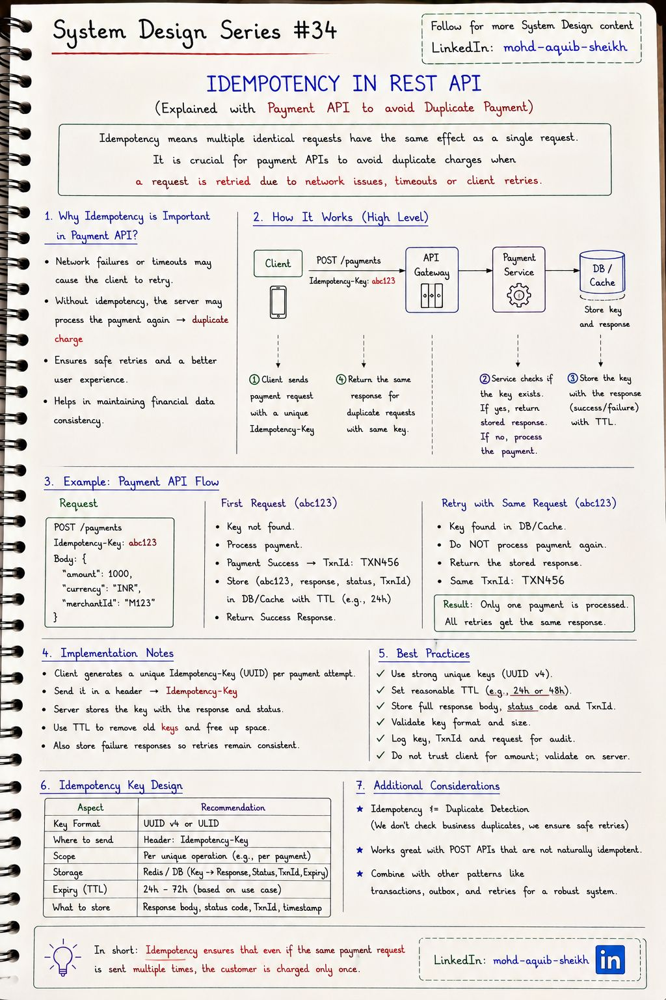
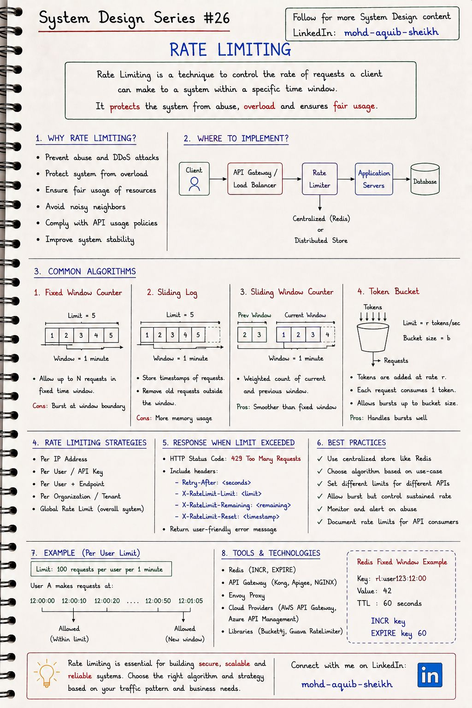

API и взаимодействие сервисов
Каким протоколом клиент разговаривает с сервером, как проектировать REST API, которым удобно пользоваться, как сделать повтор запроса безопасным и как защитить сервис от слишком настойчивых клиентов.
4.1Способы взаимодействия клиента и сервера#14
Конспект называет их «синхронными»: клиент обращается к серверу напрямую, без посредника-очереди. Главный выбор — направление и длительность соединения: один запрос и один ответ, поток событий от сервера или постоянный двусторонний канал.


| Способ | Направление | Соединение | Когда выбирать |
|---|---|---|---|
| REST | клиент → сервер | короткое | CRUD, публичные API, интеграции — вариант по умолчанию |
| GraphQL | клиент → сервер | короткое | Разным клиентам нужны разные срезы данных; избавляет от over-fetching |
| gRPC | клиент → сервер, потоки в обе стороны | долгое (HTTP/2) | Быстрые вызовы между внутренними сервисами, строгий контракт (Protobuf) |
| SSE | сервер → клиент | долгое | Сервер шлёт обновления, клиент только слушает: лента, котировки, прогресс |
| WebSocket | в обе стороны | долгое | Чат, игры, совместное редактирование |
| Long polling | сервер → клиент | повторяющиеся запросы | Запасной вариант, когда WebSocket и SSE недоступны |
- «Синхронное» здесь — про отсутствие брокера, а не про блокирующий вызов. WebSocket и SSE по своей природе событийные; противопоставление им — асинхронное взаимодействие через очередь (тема 12).
- HTTP/2 Server Push устарел: Chrome отключил его в 2022 году, в HTTP/3 им практически не пользуются. Вместо него —
103 Early Hintsи<link rel="preload">. Строку 7 конспекта можно не учить. - Синхронная цепочка наследует худшее от каждого звена. Если A ждёт B, а B ждёт C, задержки складываются, доступности перемножаются (тема 01). Каждому вызову нужны таймаут, ограниченные ретраи и circuit breaker (тема 15).
- Долгие соединения усложняют масштабирование: сервер хранит состояние каждого подключения, а при деплое их нужно аккуратно закрывать и переустанавливать. Устройство протоколов — в «Компьютерных сетях», тема 11.
4.2REST API: лучшие практики#16
Хороший REST API предсказуем: зная один эндпоинт, можно угадать остальные. Конспект собирает двенадцать правил — от именования ресурсов до мониторинга.


Ресурсы и адреса
- Существительные во множественном числе:
/users, а не/getUsers. - Иерархия:
/users/123/orders. - Фильтры, сортировка, страницы — в query-параметрах.
- Версия в пути
/api/v1/…или в заголовкеAccept.
Формат и поведение
- JSON, единая структура ответа и ошибок.
- Никогда не отдавать большой список целиком — пагинация.
- HTTPS всегда, OAuth2/JWT, минимум привилегий.
- Документация OpenAPI, логи и метрики по каждому эндпоинту.
| Метод | Назначение | Безопасный | Идемпотентный | Типичные коды |
|---|---|---|---|---|
GET | Получить | да | да | 200, 404 |
POST | Создать / выполнить действие | нет | нет | 201 + Location, 400, 409 |
PUT | Заменить целиком | нет | да | 200, 204 |
PATCH | Изменить часть | нет | не гарантируется | 200, 204 |
DELETE | Удалить | нет | да | 204, 404 |
- Коды, которых нет на рисунке, но которые нужны:
204(успех без тела),403(аутентифицирован, но нельзя — не путать с401),409(конфликт состояния),422(синтаксис верен, данные не прошли валидацию),429(лимит). - Поле
"success": trueв теле дублирует код ответа. Это допустимый стиль, но HTTP-код уже сообщает результат. Для ошибок есть стандарт — Problem Details (RFC 9457,application/problem+json), его поддерживает Spring 6 (ProblemDetail). - Пагинация по номеру страницы ломается на больших данных.
OFFSET 1000000заставляет БД прочитать и выбросить миллион строк, а при вставках строки дублируются между страницами. Для лент и выгрузок — курсорная (keyset) пагинация:?after=<id последней записи>&limit=20. - «Never break existing clients» на практике значит: добавлять поля можно, удалять и менять смысл — только в новой версии.
4.3Идемпотентность в REST API#34
Идемпотентность — свойство операции давать один и тот же результат независимо от числа повторений. Она нужна, потому что в сети нельзя отличить «запрос не дошёл» от «ответ потерялся»: клиент видит таймаут и обязан повторить. Без защиты повтор POST /payments спишет деньги дважды.


- Клиент генерирует уникальный ключ (UUID) на операцию, а не на попытку, и передаёт в заголовке
Idempotency-Key. При повторе ключ тот же. - Сервер ищет ключ в хранилище. Нашёл — возвращает сохранённый ответ, ничего не выполняя.
- Не нашёл — выполняет операцию и сохраняет ключ вместе с ответом, статусом и идентификатором транзакции, с TTL 24–72 часа.
- Неуспешные ответы тоже сохраняются — повторы должны быть согласованными.
- Захватывать ключ атомарно:
INSERTс уникальным ограничением илиSET key NXв Redis до выполнения операции, со статусом «в обработке». - Второму запросу с тем же ключом, пока первый не завершён, — отвечать
409 Conflict(или ждать). - В идеале запись ключа и бизнес-операция — в одной транзакции БД: тогда невозможно состояние «платёж прошёл, ключ не сохранился».
- Хранить хэш тела запроса: тот же ключ с другим телом — ошибка клиента (
422), а не повтор.
Идемпотентность — не обнаружение дубликатов: два намеренных платежа на одинаковую сумму должны пройти оба, у них разные ключи. Та же идея на стороне потребителя сообщений — в теме 13.
4.4Ограничение частоты запросов#26
Rate limiting ограничивает число запросов клиента за интервал времени. Он защищает от злоупотреблений и перегрузки, не даёт одному «шумному соседу» отобрать ресурсы у остальных и делает поведение системы под нагрузкой предсказуемым.


| Алгоритм | Идея | Плюсы | Минусы |
|---|---|---|---|
| Fixed window | Счётчик на окно (например, минуту), сбрасывается на границе | Один счётчик, тривиальная реализация | Всплеск на стыке окон: до 2N запросов за короткое время |
| Sliding log | Хранить метку времени каждого запроса, считать попавшие в окно | Точно | Память растёт с числом запросов |
| Sliding window counter | Текущий счётчик + предыдущий с весом, равным доле перекрытия | Сглаживает стык, два числа на клиента | Приближение |
| Token bucket | Токены добавляются со скоростью r, запрос забирает токен; ёмкость ведра b | Разрешает короткие всплески до b, держит среднюю скорость | Два параметра для настройки |
| Leaky bucket | Запросы вытекают из очереди с постоянной скоростью | Ровный поток на выходе | Всплески превращаются в задержку |
По какому ключу ограничивать: IP-адрес, пользователь или API-ключ, пользователь + эндпоинт, организация (tenant), глобальный предел системы. Обычно комбинируют несколько уровней.
Ответ при превышении — 429 Too Many Requests с заголовком Retry-After; полезно возвращать и остаток квоты (X-RateLimit-Limit, -Remaining, -Reset), чтобы честный клиент мог притормозить сам.
INCR с EXPIRE (пример внизу конспекта) либо Lua-скрипт для token bucket и скользящего окна (тема 11). И заранее решите, что делать, если Redis недоступен: пропускать все запросы (fail-open) или отклонять (fail-closed).
4.5Интерактив: ограничитель частоты запросов
| Алгоритм | Память на клиента | Особенность |
|---|---|---|
| Фиксированное окно | один счётчик | прост (INCR + EXPIRE в Redis), но пропускает двойной всплеск на границе окон |
| Скользящий журнал | метка на каждый запрос | точен, но дорог по памяти при высоких лимитах |
| Скользящее окно со счётчиками | два счётчика | взвешенная сумма текущего и предыдущего окна — практичный компромисс |
| Token bucket | число жетонов и время | допускает короткие всплески до ёмкости ведра, держит среднюю частоту; стандарт для API |
| Leaky bucket | очередь | выравнивает поток: запросы выходят с постоянной скоростью |
4.6Самопроверка
Клиент повторил POST /payments из-за таймаута. Как избежать двойного списания?
- Запретить повторы
- Использовать PUT
- Ключ идемпотентности в заголовке: сервер сохраняет результат первого выполнения и возвращает его на повтор
- Увеличить таймаут
Что вернуть клиенту, превысившему лимит запросов?
- 500 Internal Server Error
- 429 Too Many Requests с заголовком Retry-After
- 403 Forbidden
- 200 с пустым телом
Когда gRPC предпочтительнее REST?
- Внутренние вызовы между сервисами: строгий контракт, бинарный формат, потоковая передача
- Публичный API для браузеров и сторонних разработчиков
- Когда нужно кэширование на CDN
- Никогда
SSE или WebSocket для уведомлений о статусе заказа?
SSE. Данные идут только от сервера к клиенту, а SSE — обычный HTTP: проходит через прокси, сам переподключается, поддерживает возобновление с последнего события (Last-Event-ID). WebSocket нужен, когда клиент тоже активно пишет: чат, игра, совместное редактирование.
Какие HTTP-методы идемпотентны и почему POST — нет?
GET, PUT, DELETE (и HEAD, OPTIONS): повтор приводит к тому же состоянию — ресурс прочитан, заменён тем же содержимым, удалён. POST создаёт новый ресурс или выполняет действие при каждом вызове, поэтому повтор создаёт дубликат. PATCH идемпотентен, только если описывает итоговое состояние («установить X»), а не изменение («увеличить на 1»).
Клиент дважды отправил платёж с одним Idempotency-Key с интервалом 50 мс. Что должно произойти?
Первый запрос атомарно «занимает» ключ (уникальное ограничение в БД или SET NX) и начинает обработку. Второй видит занятый ключ в статусе «в обработке» и получает 409 (или дожидается результата). После завершения первого любой повтор возвращает сохранённый ответ. Проверка «ключа нет → обрабатываем» без атомарного захвата приведёт к двойному списанию.
Лимит 100 запросов в минуту с фиксированным окном. Сколько запросов клиент может сделать за 2 секунды?
До 200: сто в последнюю секунду одного окна и сто в первую секунду следующего. Это главный недостаток fixed window. Скользящее окно со счётчиком или token bucket с ёмкостью ведра 100 и скоростью пополнения 100/мин этого не допускают.
Почему пагинация через offset плоха для ленты с миллионами записей?
БД вынуждена прочитать и отбросить все пропускаемые строки — время растёт линейно с номером страницы. Кроме того, если между запросами появились новые записи, страницы «съезжают»: записи дублируются или пропускаются. Курсорная пагинация (WHERE id < :last ORDER BY id DESC LIMIT 20) использует индекс и стабильна.